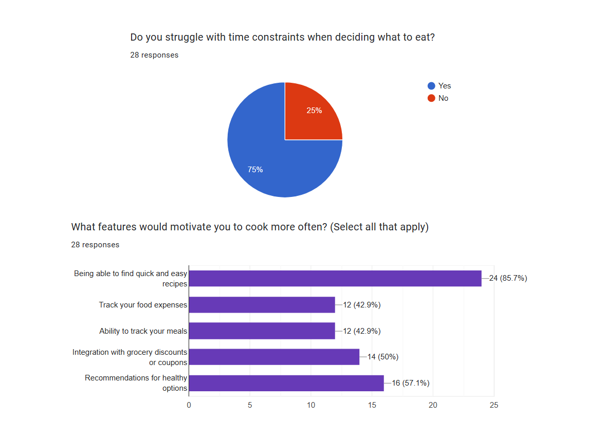
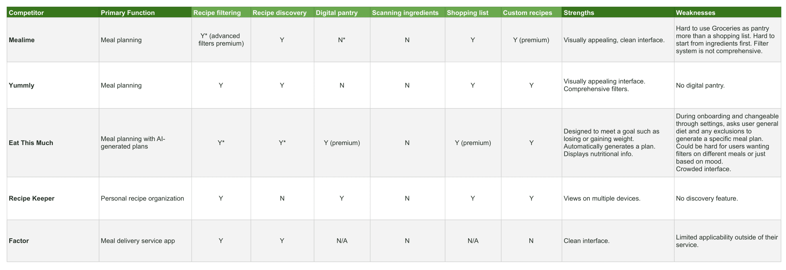
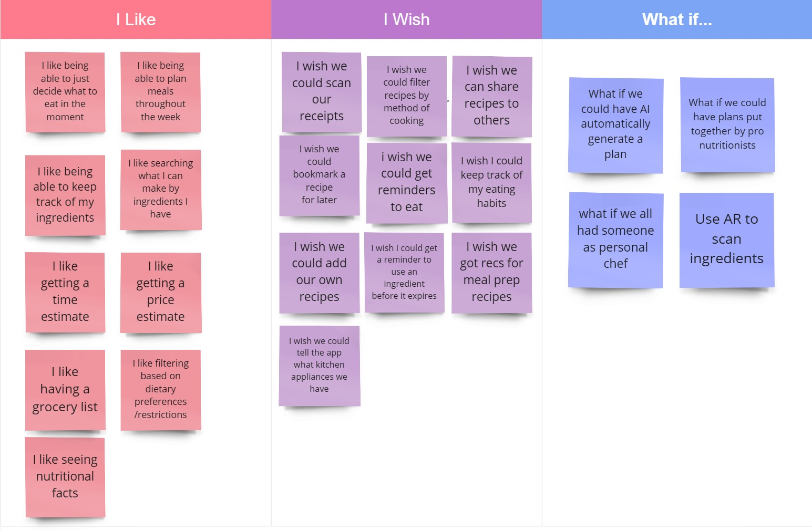
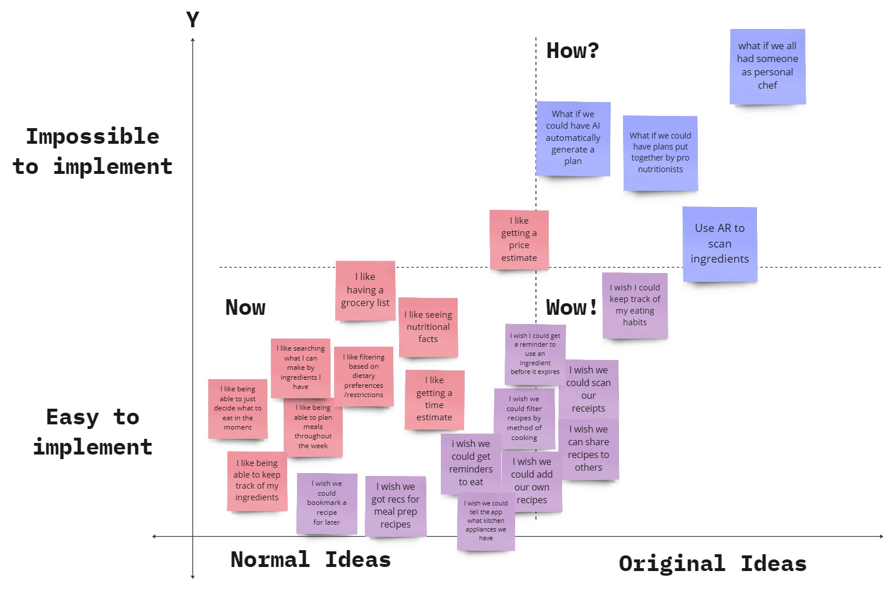
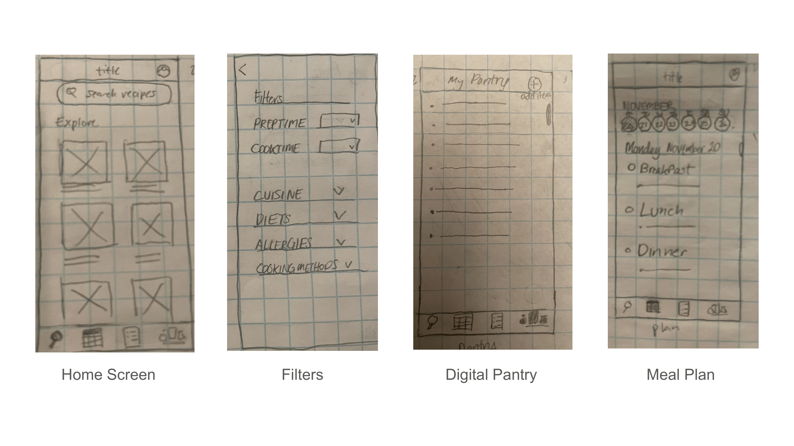
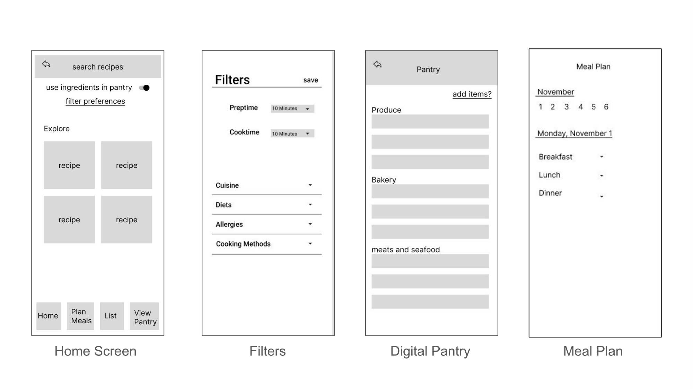
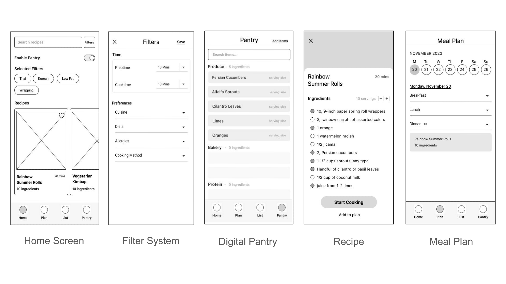
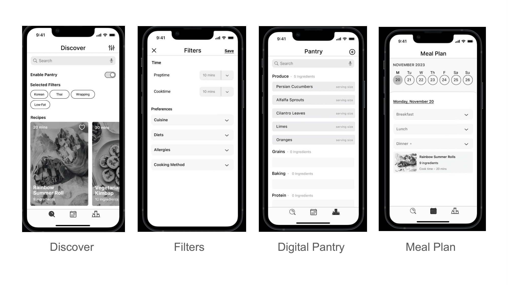
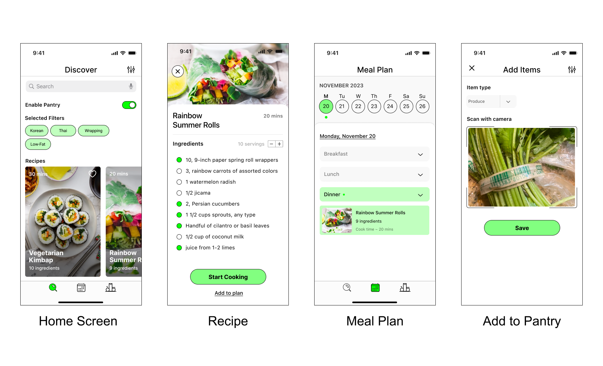

About
For my first group project in UI/UX, our job was to research, prototype, test, and validate an idea for a brand-new mobile application. Your creation must solve a real, clearly identified need in users’ everyday lives. Out of many ideas our group generated for a mobile app, we all identified with the need to decide what to eat everyday.
"How might we make cooking easier and help users save time and money, and improve their nutrition?"
The Problem
Busy people face the everyday issue of eating out too much instead of cooking due to time constraints and the difficulty of keeping track of ingredients.
The Goal
Our goal is to redesign the Dream Center website to address these frustrations by:
- Providing users with a calendar of diverse volunteer events, ensuring they can easily coordinate their volunteer work based on their time and interests.
- Offering transparency on the organization's impact by showcasing the real-world results of donors' and volunteers' contributions.
- Providing users with personal dashboards to track their own contributions and navigate a clear list of available volunteering opportunities to simplify the sign-up process.
User Research
Before we started user research proper, we first designed a proto-persona describing our target user, a prospective donor and volunteer for Dream Center.
Proto-Persona
As we designed our proto-persona, we anticipated that users would:
- Have a strong interest in volunteering.
- Be frustrated with aligning organizations to personal interests, a lack of responses from non-profits, and unsure of fund allocation.
User Survey
We conducted a user survey with respondents. We first surveyed about comparing eating out and cooking (budget, time, etc.) We found that the majority of users struggled with time constraints when deciding what to eat. Additionally, being able to find quick and easy recipes was the most requested feature to motivate users to cook more often. These two insights inspired us to focus on making cooking as easy as possible.
User Interviews
We conducted five user interviews. The key insights of these interviews taught us that users value having a website that is up-to-date and clearly presents the organization's identity and mission. They need to understand how they can help, different ways they can help, and what impact they are helping to make.

User Persona
We then created an updated user persona by synthesizing the insights gained from our user research.

Definition & Ideation
With an idea of what users need, we started to explore the
Competitor Analysis
Our direct competitors were similar meal planning mobile apps: Mealime and Eat This Much. Our indirect competitors included Recipe Keeper and Factor. Recipe Keeper is a desktop-only application, and Factor is a meal delivery app.
We noted the readability of each of these websites' navigation and display of their mission. We also noticed similarities in features. All of them have a prominently displayed Donate call-to-action button that would take you to the portal to donate. They had also had some form of volunteer sign-up, but it would be located in different places, but more commonly under a "Get Involved" option in the dropdown menu. We admired A Place Called Home for their event calendar feature which let users view upcoming events without first having to sign up. We also were inspired by PATH's graphics that displayed statistics that reported their organization's impact.
Feature Definition and Prioritization
We created an I Like, I Wish, What If chart and a Feature Prioritization Matrix that allowed us to vote on, define, and organize ideas for features based on feasibility and originality.

We planned to execute the following ideas in the "Now" and "Wow!" sections to serve our user's needs while imagining more advanced ideas for future features in the "How?" section.
- Our key features in the “Now” portion: filtering and searching for recipes, keeping track of ingredients, creating a meal plan
- Easier, more original ideas near the “Wow!” section: filtering recipes by cooking method, bookmarking recipes for later
- Interesting “How?” ideas for the future: receipt scanning, AR ingredient scanning, AI-generated meal plans
By developing a new website for the Dream Center with a transparent reporting system of use of donated funds, a updated event calendar system, and a personalized dashboard, we help prospective volunteers and donors to solve roadblocks in trusting the organization, getting involved, and staying motivated.
User Journey
Testing & Iterating
With our plans, we began to formalize the structure of the website and create prototypes we can test and iterate upon.

User Flow
Using the information architecture from our card sorting, we constructed a user flow. The user would either want to volunteer, donate, or view the organization's impact. We designed the primary navigation to make these paths as seamless as possible. When signing up to volunteer or donate, the user would be directed to create an account so that they may view the User Dashboard. From the User Dashboard they can view their contribution history and upcoming events.

A part of the flow not pictured here is that the list of Programs would link to the individual pages of each program, that would each have links to volunteer and/or donate to them, to highlight their impact on the Impact Report, and to view their events on the Event Calendar. This has yet to be built out.
Sketches
We then sketched out what the user interface might look like.
Digital Wireframes
Lo-fi Prototype
We made slight changes from our digital wireframes to lo-fi prototypes based on teacher feedback, such as increasing the breathing room between elements on the home page.
Usability Testing and Iterations
We then took our lo-fi prototype to conduct usability tests. The tasks we wanted to test are:
- Successfully create an account.
- Successfully add ingredients to their digital pantry.
- Sucessfully choose a recipe using filters.
Most readability issues would be fixed in transition to Mid-Fi, however there were a few issues that were of relatively high priority:
Based on the results, we made iterations to the prototypes:

Mid-Fi Prototype
Hi-Fi Prototyping
We did not finish a high fidelity prototype within the working period. However, I created some screens of what a hi-fidelity prototype would look like with color images and the implementation of the green accent color from our logo.
Conclusion
This was our first group project, and we further fpracticed team communication
Our next steps would be to fully build out the hi-fidelity prototype, as well as testing and iterating upon it. In the future we would like to build out the bookmarking feature and add more features such as a shopping list, custom recipes, and community features.